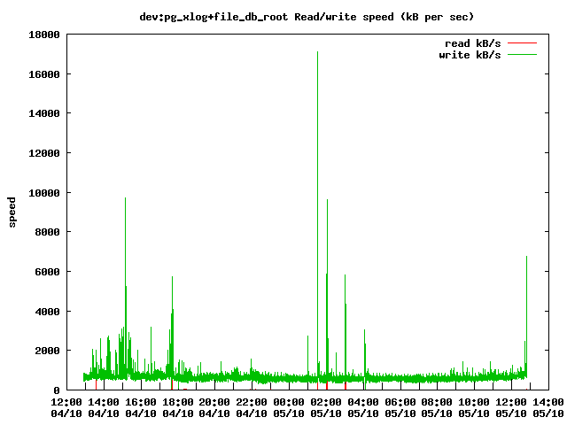
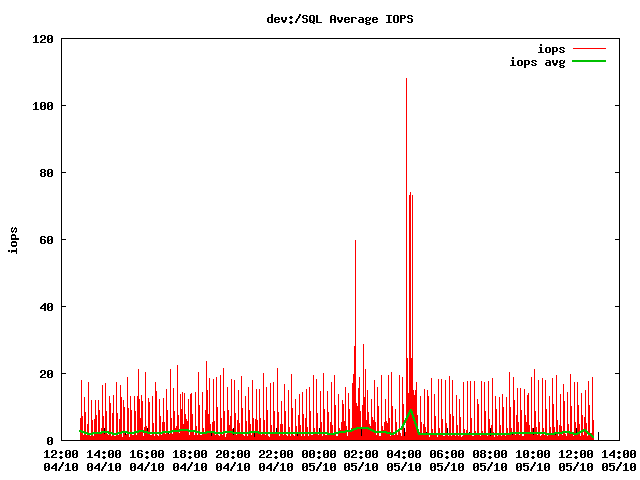
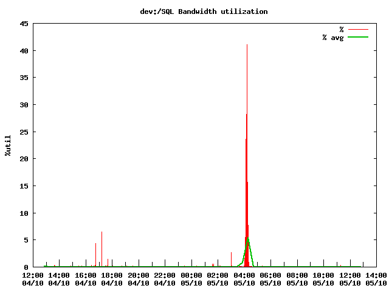

Профилирование нагрузки на файловую систему с помощью iostat и gnuplot
Зачастую работа «в поле» требует сбора и анализа информации на сайте заказчика в условиях наличия крайне скудного списка утилит. В частности собрать информацию об использовании системы ввода-вывода в течении дня. В статье я попробую показать, как располагая только iostat и gnuplot можно попробовать провести анализ системы и какие выводы можно сделать. Я не претендую на доскональное владение предметом и точное использование терминов. Более того, я постараюсь говорить «обычным» языком и не бросаться терминами. Все описанное ниже есть плод опыта, ошибок, гугления, курения манов и прочая.
Небольшой ликбез
В терминах оценки производительности системы ввода-вывода в части хранения, есть несколько характеристик:
При этом нужно понимать, что ни один из этих параметров не может дать полноценный профиль использования файловой системы. Сложно увидеть и оценить «чистую» работу файловой подсистемы, хотя бы из-за того, что в стеке ее работы присутствуют различные кеши: буфер диска, кеш RAID контроллера, системный кеш. Соответственно более менее экстраполируемые цифры могут быть получены только вблизи от пиковой нагрузки. А тема правильного тестирования систем хранения, сравнения и оценки результатов это вообще поле не паханое и можно писать диссертации.
Базовые характеристики
Так как измерять абсолютные цифры вообще дело не очень благодарное, я предпочитаю оценивать их значение опираясь на какой то базис, и после этого уже оперировать какими то относительными мерками. Причем опыт работы с СУБД намекает, что сравнивать стоит не значения, а их порядки.
За такой базис я для себя принял следующие цифры:
Средний серверный жесткий диск 10 тысяч оборотов в секунду, подключенный по SAS к путному RAID контроллеру (с кешем на батарейке):
Если все это живет в RAID то соответственно в зависимости от типа рейда цифры множатся или делятся на число дисков. Например: 4 диска в RAID 1+0 должны показать половину суммарных iops всех четырех дисков.
Если тесты показывают, что система работает, выдавая примерно эти цифры, значит никто при тестировании не «налажал», никаких чудес нет и можно работать дальше. Иначе стоит сначала разобраться что с железом (может RAID восстанавливается или винт сыпется).
В основном результаты тестирования я использую для оценки эффективности работы с системой хранения и влияние настроек СУБД и нашего софта, на то как они её используют, а так же быстрой диагностики наличия проблем с СУБД.
Измерения
Подготовка
Для начала разумно сохранить df -hl для того чтобы понимать о каких разделах идет речь.
# df -hl
Filesystem Size Used Avail Use% Mounted on
/dev/sda1 4.0G 3.9G 0 100% /
/dev/sda7 102G 94G 2.7G 98% /SQL
/dev/sda6 1012M 307M 654M 32% /var
/dev/sda2 3.0G 69M 2.8G 3% /tmp
/dev/sda5 34G 24G 8.8G 73% /ARCHIVE
tmpfs 4.0G 26M 3.9G 1% /dev/shm
Кстати, полезно еще помнить на каком из разделов располагается swap.
Хорошо будет, если физическое устройство разбито на разные логические разделы для каждого компонента. Этим мы сможем оценить профиль использования системы ввода-вывода для каждого разнесенного компонента.
Наблюдение
В отличии от других утилит iostat не очень приспособлен для логирования с учетом времени. Ну ничего, awk в помощь.
Строчка для получения лог файла:
iostat -xk -t 10 | awk '// {print strftime("%Y-%m-%d %H:%M:%S"),$0}' >> iostat.log &
Естественно, запускать это надо в скрине.
Следует обратить внимание на параметр -t 10. Это интервал, за который усредняются значения и вычисляются «средние» в секундах.
Если значение будет слишком мало — будут на графике лишние пики и выбросы. Если слишком велико — существенных пиков заметно не будет. По моему интервал 3-10 секунд оптимальный.
Ввод нашего лога будет примерно таким:
iostat -xk -t 10 | awk '// {print strftime("%Y-%m-%d %H:%M:%S"),$0}'
2013-01-14 11:31:04 Linux 2.6.32.32-m4.x86_64 (localhost.localdomain) 01/14/2013
2013-01-14 11:31:04
2013-01-14 11:31:04 Time: 11:31:04 AM
2013-01-14 11:31:04 avg-cpu: %user %nice %system %iowait %steal %idle
2013-01-14 11:31:04 0.67 0.00 1.02 1.11 0.00 97.20
2013-01-14 11:31:04
2013-01-14 11:31:04 Device: rrqm/s wrqm/s r/s w/s rkB/s wkB/s avgrq-sz avgqu-sz await svctm %util
2013-01-14 11:31:04 sda 20.70 47.44 0.91 12.01 26.18 237.91 40.89 2.35 181.49 7.76 10.03
2013-01-14 11:31:04 sda1 0.00 0.83 0.08 0.67 0.94 6.00 18.47 0.05 61.99 15.81 1.19
2013-01-14 11:31:04 sda2 0.00 0.24 0.00 0.01 0.00 1.00 173.76 0.01 533.13 45.98 0.05
2013-01-14 11:31:04 sda3 0.00 0.00 0.00 0.00 0.01 0.02 120.95 0.00 33.78 25.52 0.00
2013-01-14 11:31:04 sda4 0.00 0.00 0.00 0.00 0.00 0.00 2.00 0.00 72.00 72.00 0.00
2013-01-14 11:31:04 sda5 7.45 2.07 0.18 1.17 3.82 12.99 24.88 0.06 41.68 13.86 1.87
2013-01-14 11:31:04 sda6 0.00 0.15 0.00 0.28 0.11 1.72 12.85 0.01 40.63 18.86 0.54
2013-01-14 11:31:04 sda7 13.24 44.15 0.65 9.87 21.29 216.18 45.16 2.23 211.42 7.91 8.32
2013-01-14 11:31:04
2013-01-14 11:31:14 Time: 11:31:14 AM
2013-01-14 11:31:14 avg-cpu: %user %nice %system %iowait %steal %idle
2013-01-14 11:31:14 0.61 0.00 1.06 1.20 0.00 97.12
2013-01-14 11:31:14
2013-01-14 11:31:14 Device: rrqm/s wrqm/s r/s w/s rkB/s wkB/s avgrq-sz avgqu-sz await svctm %util
2013-01-14 11:31:14 sda 0.00 45.40 0.00 10.50 0.00 219.20 41.75 1.69 156.43 8.30 8.72
2013-01-14 11:31:14 sda1 0.00 0.80 0.00 0.30 0.00 4.40 29.33 0.01 25.33 25.33 0.76
2013-01-14 11:31:14 sda2 0.00 0.00 0.00 0.00 0.00 0.00 0.00 0.00 0.00 0.00 0.00
2013-01-14 11:31:14 sda3 0.00 0.00 0.00 0.00 0.00 0.00 0.00 0.00 0.00 0.00 0.00
2013-01-14 11:31:14 sda4 0.00 0.00 0.00 0.00 0.00 0.00 0.00 0.00 0.00 0.00 0.00
2013-01-14 11:31:14 sda5 0.00 1.30 0.00 1.00 0.00 9.20 18.40 0.03 27.80 8.10 0.81
2013-01-14 11:31:14 sda6 0.00 0.70 0.00 1.10 0.00 7.20 13.09 0.02 18.55 10.64 1.17
2013-01-14 11:31:14 sda7 0.00 42.60 0.00 8.10 0.00 198.40 48.99 1.63 195.89 8.15 6.60
Первый блок это измерения за период работы с момента старта. Остальные за время указанный интервал.
Запускаем это логгирование на некий интервал (например пару суток, а потом просим прислать лог.
Анализ
Ну что по таким цифрам можно сказать?
В первую очередь обратим внимание на последнюю колонку %util. Хотя бы потому, что большое значение этого параметра (90%-100%) для пользователя выглядит как «сервер висит». У нас sda загружен менее чем на 9%. Нормально. Причем в основном разделом sda7(SQL).
Далее параметры записи/чтения:
О чем это говорит: диск не загружен, числа не большие. Но запросы стоит в очереди 200ms время приемлимое, но при «первом шухере расколется», сама подсистема паршивенькая. Хотя однозначно сказать нельзя? ибо опять таки диск не сильно грузится вот и не торопятся данные отправлять из очереди.
Что еще полезно: rrqm/s, wrqm/s это собственно число запросов, которые приложения попросили выполнить, но система смогла их объединить в блоки в среднем по avgrq-sz байт.
Данные цифры помогут оптимизировать работу приложения:
Понятно, что всегда последовательной работы добиться трудно, а часто и невозможно, но сопоставляя эти цифры — можно оценить улучшило или ухудшило изменение логики работы с диском нагрузку на него.
Графики
Собственно смотреть логи глазками — дело неблагодарное. Посему написал несколько «скриптов» bash и gnuplot чуть чуть парсящее логи и строящее графики.
Построение графика для одного устройства по 1-му параметру плюс гладкая безье:
#!/bin/bash
#echo "usage: $0 <iostat.log> <disk name> <out.png> <title> <yaxis-title> <column1> <title1>
echo "procesing $1 for device $2, plotting $3 ($4 - $7)"
cat $1 | grep "$2 " > dat.dat
gnuplot <<_EOF_
set terminal png
set output "$3"
set title "$4"
set xdata time
set timefmt "%Y-%m-%d %H:%M:%S"
set format x "%H:%M\n%d/%m"
set xtics nomirror scale 3,2
set ylabel "$5"
set samples 60
plot "dat.dat" using 1:$6 title "$7" with impulses, \
"dat.dat" using 1:$6 title "$7 avg" smooth bezier lw 2
_EOF_
rm dat.dat
И то же самое график для одного устройства по 2-ум параметрам:
#!/bin/bash
echo "procesing $1 for device $2, plotting $3 ($4 - $7, $9)"
cat $1 | grep "$2 " > dat.dat
gnuplot <<_EOF_
set terminal png
set output "$3"
set title "$4"
set xdata time
set timefmt "%Y-%m-%d %H:%M:%S"
set format x "%H:%M\n%d/%m"
set xtics nomirror scale 3,2
set ylabel "$5"
set samples 10
plot "dat.dat" using 1:$6 title "$7" with lines, \
"dat.dat" using 1:$8 title "$9" with lines
_EOF_
rm dat.dat
Ну а так как устройств много, да и серверов несколько, а ручками запускать лень, я написал еще парочку примитивных скриптов: plot_info.sh
#!/bin/bash
echo "usage: $0 <n> <flitle> <title> <y-axis> <column1> <column-title> <column2> <column-title>"
echo "$0 2 rw 'Read/write iops per second' 'iops' 4 'read request/s' 5 'write request/s'"
#/dev/cciss/c0d0p1 20G 12G 7.2G 61% /
#/dev/cciss/c0d0p6 476G 213G 239G 48% /ARCHIVE
#/dev/cciss/c0d0p5 9.7G 264M 8.9G 3% /var
#/dev/cciss/c0d0p3 9.7G 167M 9.0G 2% /TMP
#/dev/cciss/c0d1p1 559G 39G 521G 7% /SQL
#/dev/cciss/c0d2p2 1020G 320G 701G 32% /SQL/file
#/dev/cciss/c0d2p1 98G 1.9G 96G 2% /SQL/pgsql/data/pg_xlog
./graph$1.sh ./log201.txt c0d0p2 201/c0d0p2.swap.$2.png "swap $3" "$4" "$5" "$6" "$7" "$8"
./graph$1.sh ./log201.txt c0d0p3 201/c0d0p3.tmp.$2.png "/TMP $3" "$4" "$5" "$6" "$7" "$8"
./graph$1.sh ./log201.txt c0d1p1 201/c0d1p1.sql.$2.png "/SQL $3" "$4" "$5" "$6" "$7" "$8"
./graph$1.sh ./log201.txt c0d2p1 201/c0d2p1.pg_xlog.$2.png "pg_xlog $3" "$4" "$5" "$6" "$7" "$8"
./graph$1.sh ./log201.txt c0d1 201/dev.c0d1-sql.$2.png "dev:/SQL $3" "$4" "$5" "$6" "$7" "$8"
./graph$1.sh ./log201.txt c0d2 201/dev.c0d2-xlog_file.$2.png "dev:pg_xlog+file $3" "$4" "$5" "$6" "$7" "$8"
и task.sh
#!/bin/bash
./plot_info.sh 3 iops_load 'Estimated IOPS' 'iops_limit' '(100*($7+$6)/$14)' 'iops'
./plot_info.sh 0 wrratio 'Write percent' 'wratio' '($9*100/($10+$9))' '%'
./plot_info.sh 0 qwaitratio 'Queue wait ratio' 'qwaitratio' '($13*100/$12)' '%'
./plot_info.sh 2 rwqm 'Request merged and queued to device' 'rqm/s' 4 'read rqm/s' 5 'write rqm/s'
./plot_info.sh 2 request 'Request issued to device' 'requests' 6 'r/s' 7 'w/s'
./plot_info.sh 2 rwspeed 'Read/write speed (kB per sec)' 'speed' 8 'read kB/s' 9 'write kB/s'
./plot_info.sh 1 rsize 'Average request size' 'avgrq-sz' '($10*4)' 'kB'
./plot_info.sh 1 qsize 'Average query size' 'avgqu-sz' 11 'queries'
./plot_info.sh 2 await 'Average request servicing time' 'await' "'12'" 'waiting msec' 13 'servicing msec'
./plot_info.sh 1 util 'Bandwidth utilization' '%util' 14 '%'
./plot_info.sh 1 iops 'Average IOPS' 'iops' "'7+6'" 'iops'
За код прошу не пинать писалось для работы быстро и на коленке( для чего собственно скрипты умными людьми и придумывались).
В итоге получаем симпатичные графики:



Резюмируя
В качестве резюме пара «успешных историй»
Обычно у пользователя симптом только один: все тормозит. Ниже буду приводить примеры как анализ логов iostat помог выявить проблему, или указать что проблема, не в диске.
История первая
В iostat увидели аномально высокие значения rKB/s при выполнении самых простейших запросов, включая запросы с LIMIT 1 (десятки и сотни мегабайт) — явно читаем больше чем надо.
Из этого смогли в итоге показать, что не отрабатывал автовакуум (хоть и запускался). Дальнейший лог вакуума показал, что max_fsm_page на два порядка ниже необходимого.
История вторая
Длительный коммит транзакции порядка 60 секунд содержащей всего с десяток DDL запросов. Все грешили на высокую «фоновую» нагрузку, типа от этого и тормозит. Но iostat всячески показывал, что в это время никакой дополнительно аномальной нагрузки на диск нет. В итоге дело в «небольшом» косяке СУБД PostgreSQL 8.3 связанное с большим числом (пулом) не использующихся соединений…
Немного о том вокруг чего все это
Так получилось, что разрабатываемый нами продукт имеет в своем составе некое хранилище на базе СУБД PostgreSQL. И живет эта база без какого либо присмотра со стороны DBA, и нашему саппорту доступа к ней тоже не дают. Клиентов на чтение у этой базы немного — несколько десятков. А вот клиентов на запись хоть и не много (до сотни), только пишут они 24/7 когда сотни записей в секунду, а когда и тысячу-другую. Ну и как завещал великий Мерфи — в тестовой лаборатории на синтетике все всегда работает, а вот в поле на реальных данных «все ужасно тормозит».
В итоге встает задача чужими руками по телефону собрать с полей информацию о работе комплекса и выяснить: чего же ему не хватает. И руки эти как правило неквалифицированные, максимум запустить PuTTY и WinSCP, скриптик какой нибудь, логи прислать. На большее можно и не расчитывать.
Другой вопрос — комплекс сложный, лишнего железа нет. Поставить дополнительный софт конечно можно, но мы все понимаем что даже бесплатный софт, не бесплатен, а платить за дополнительную установку, настройку и поддержку заказчик не хочет. И опять таки лишний компонент в системе никак не способствует увеличению надежности.
В итоге имеем:
Сервер уровня HP DL380G7 с живущей на ней СУБД PostgreSQL и обвязкой из всяческих клиентов писанных на C++.
Операционная система на базе урезанных дистрибутивов Fedora или CentOS.
Хранение на базе нормального RAID контролера с десятком SAS винтов.
Из утилит доступен только самый минимум, включающий iostat и gnuplot.